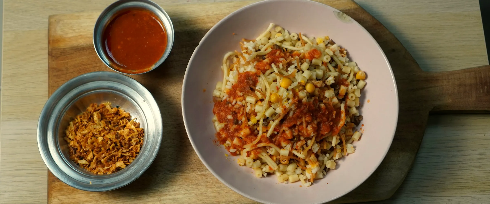

Slate & Saffron
Recipes
Drinks
My Fridge
Saved
6 recipes
African Cuisine
Clay pots and bold red spice

Koshari
Egypt · 50 min · Medium
Jollof Rice
Nigeria · 50 min · Medium · Vegetarian version
Vegetable Tagine
Morocco · 60 min · Medium
Misir Wat
Ethiopia · 45 min · Easy
Vegetable Couscous
Tunisia · 35 min · Easy
Akara
Nigeria · 35 min · Medium